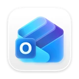
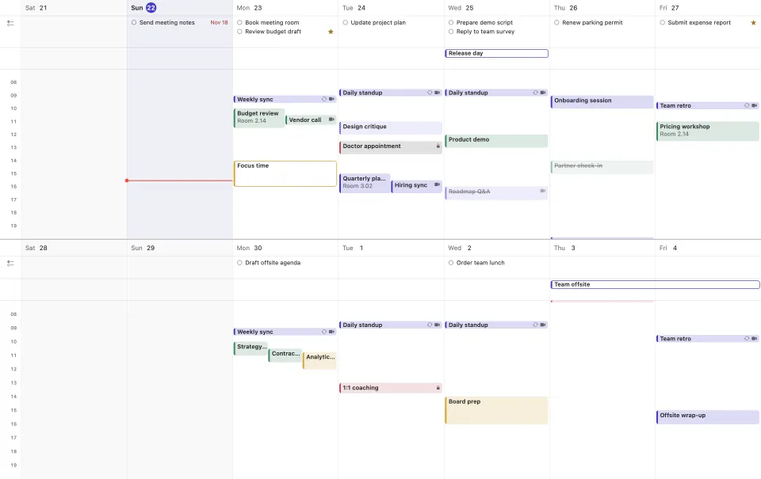
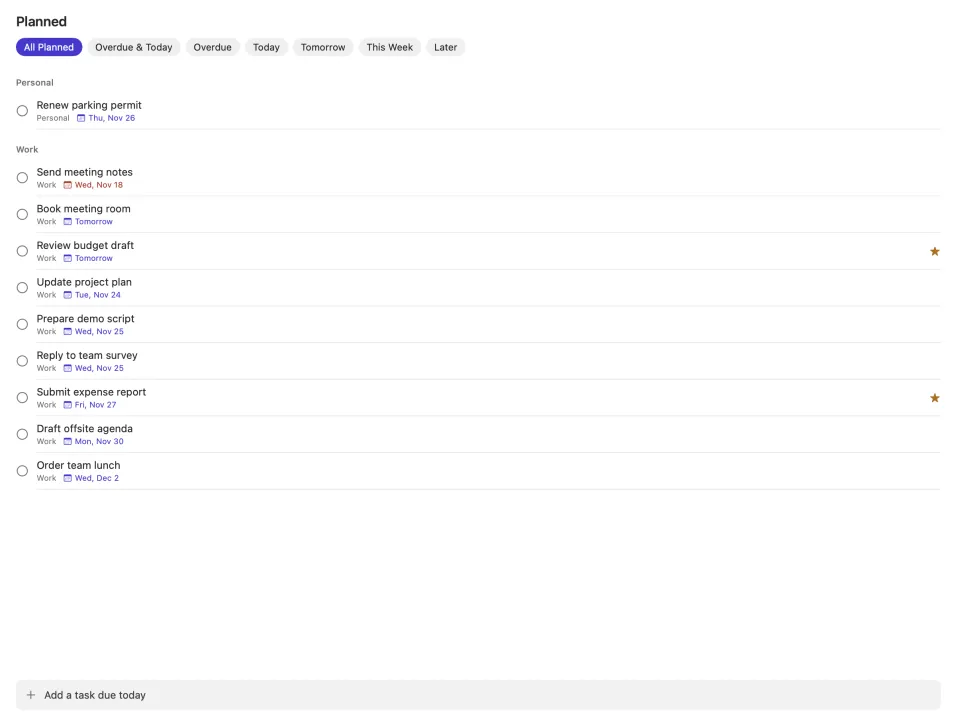
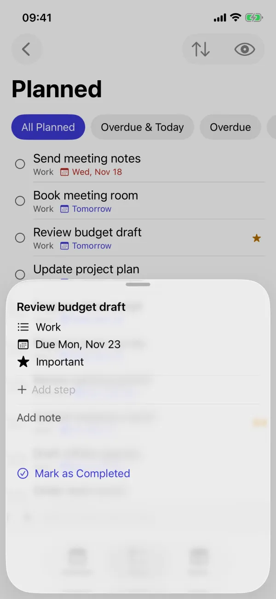
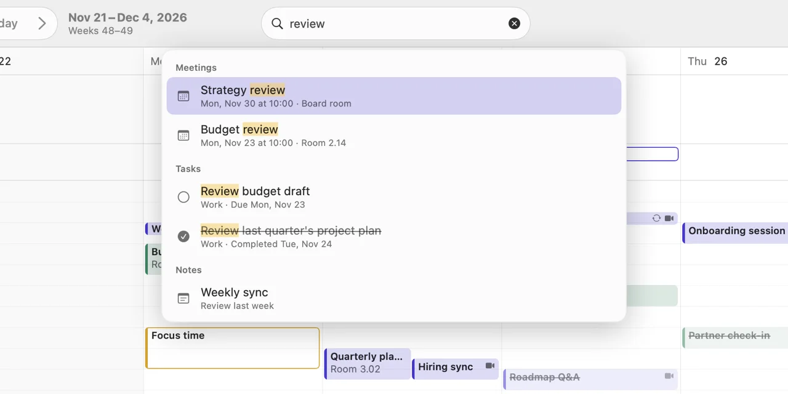
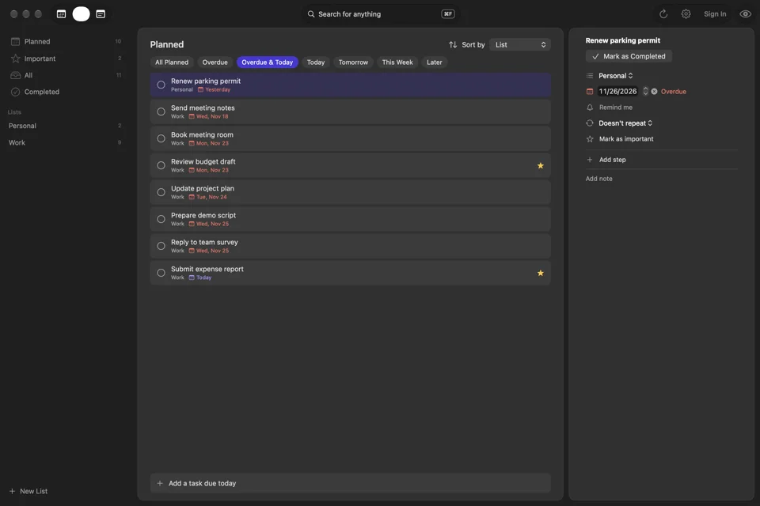
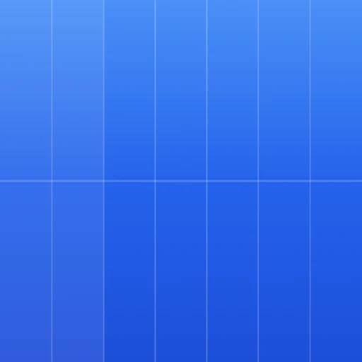

say “lanes”the ≈ is two lanes: this week and the next
Calendar, tasks and notes. Connected to your Microsoft 365.
lães shows your Outlook calendar, Microsoft To Do and your notes side by side, on Mac, iPhone and iPad. Two weeks at a time, with a clear opinion about how to plan them.
lães brings your calendar, tasks and notes into one clear, organised place.

Outlook Calendaryour meetings
Microsoft To Doyour tasks and lists

OneDriveyour notes, as Markdown files
Your data stays private. It syncs through the Microsoft account you already have, and lães adds no account of its own.
Between you and Microsoft
You sign in with Microsoft. Your calendar, tasks and notes go to Microsoft Graph and nowhere else.
Works offline
A copy stays on your device. Changes made offline are sent, in order, when you are back.
Notes are files
Markdown in a OneDrive folder only lães uses. Open them anywhere, keep them forever.
Native, nothing else
Built with SwiftUI. No ads. The developer sees crash reports and anonymous usage counts, never your data.
Opinionated task management
Every task gets a day. Every day fits on one screen.
Plan your tasks and your meetings together, two weeks at a time. A task sits on top of the day it is due; the meetings sit below it. Drop a task into the calendar and lães blocks the time for it in Outlook.
Two weeks, not a month. This week on top, next week below. Close enough to act on, far enough to see what is coming.
Weeks start on Saturday. Plan the week on the weekend, and keep Monday to Friday in one unbroken row. Or pick another day.
Overdue lands on today. What you didn't finish follows you, with its original date in red.
Mon 23
Book meeting room
Weekly syncBudget review
Tue 24
Review budget draftUpdate project plan
Daily standupReview budget draftHiring sync
Wed 25
Daily standupProduct demo
Review budget draft
Drag a task into a day’s hours, and the time is yours.
Your AI planning partner
Built for the assistant you already use
lães runs a small MCP server on your Mac, reachable only from your Mac and only with your token. Any MCP-capable tool can connect, Claude Code included. Settings has one button that turns it on and copies a setup prompt your AI follows by itself.
Reads your weeks, tasks and notes, with full-text search across every note
Creates tasks, blocks time and writes notes linked to meetings
Respects the eye: what you hide, your agent can't see
Off until you turn it on. Nothing leaves your Mac except the calls to Microsoft
Here's the transcript of today's call with Acme. Prep me for the follow-up.
search_noteslist_eventscreate_notecreate_task
Done. I linked a note with the open questions to Acme follow-up on Tuesday and added two tasks for Monday. You'll get a reminder five minutes before.
Switch with ⌘1, ⌘2 and ⌘3. One search in the toolbar finds anything in all three.
Weeks
More than a calendar
Two weeks from Saturday to Friday. Each day lists its tasks above its meetings, and a red line marks right now. Click a meeting to see who, where and when, or to start a note for it.
Drag a task to another day to move its due date
Categories keep the colours you gave them in Outlook
On iPhone, three days at a time; on iPad, both weeks

Tasks
To-dos with a due day, not a someday
Every Microsoft To Do list, with Planned one click from Overdue & Today. Type “friday” or “star” into a new task and lães sets the day and the star for you. A task’s steps, reminder and note open on a card beside the list.
Completed shows what you finished, by day, and lets you reopen it
Repeating tasks bring up their next occurrence by themselves
Reorder your lists once; every device follows


Notes
Notes that know their meeting
Link a note to a meeting and lães reminds you five minutes before it starts. Notes are plain Markdown: headings, lists, links, and to-dos you tick while reading. The formatting shows as you type and steps aside when you stop.
Every note is a file in your own OneDrive
On iPhone, a row of formatting keys sits above the keyboard
Notes your AI assistant writes show up after the next refresh
Search ⌘F
One search for anything
Tasks, done ones too, notes and meetings from months around today, in one field in the toolbar. Typos are forgiven, and what belongs to the view you are in comes first.

Opinionated, not rigid
Endlessly customisable
The opinions are defaults. The week’s first day, the hours you see, what counts as private, how lães looks, and even its icon are yours to change.
Light, dark, or whatever your Mac says

An app icon you design
Six stickers, four corners, 143 designs. Drag one onto the icon, or off again. On this page, tap a sticker to try.

Your week
Start it on any day, and show only the hours you work.
Private with one switch
Mark categories and lists as private, then hide them all with the eye before you share your screen.
Reminders on your terms
Meeting reminders, a badge for what is due, and a morning summary. Each one has its own switch.
Shortcuts for everything
Hold ⌘ and the toolbar shows its keys.
Plan the next two weeks with lães
lães is in public beta for Mac and iPhone through Apple's TestFlight. It needs a Microsoft 365 work, school or personal account.


 Weeks
Weeks